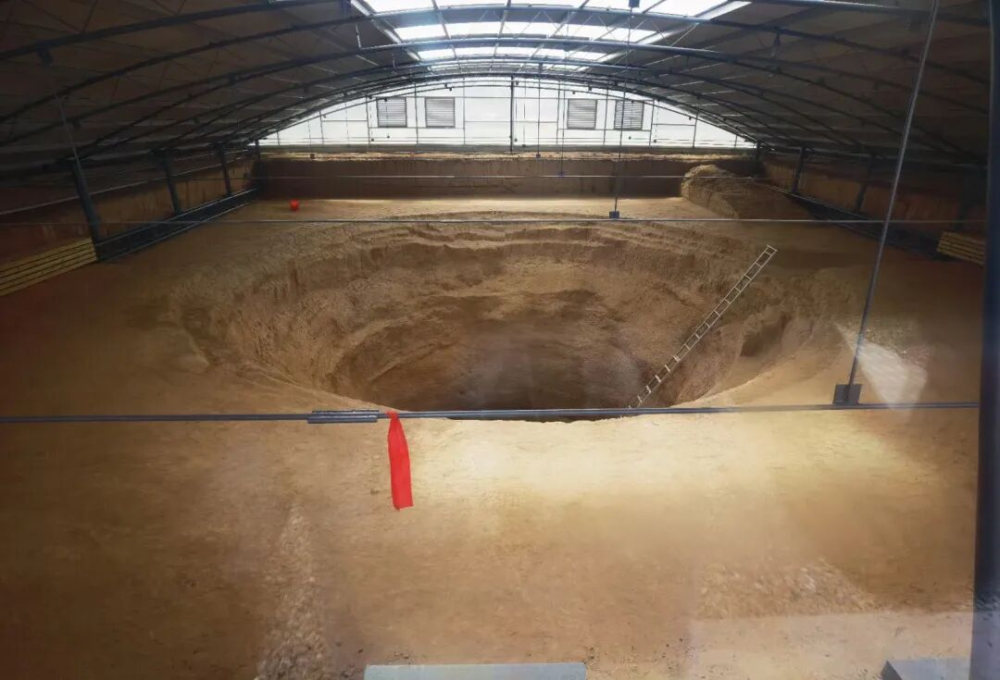
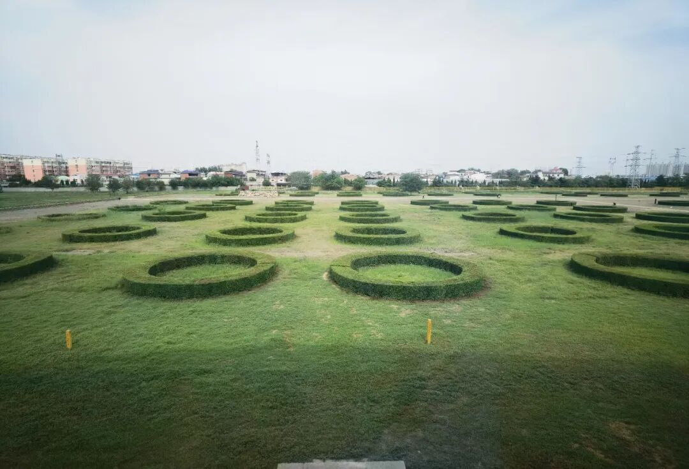
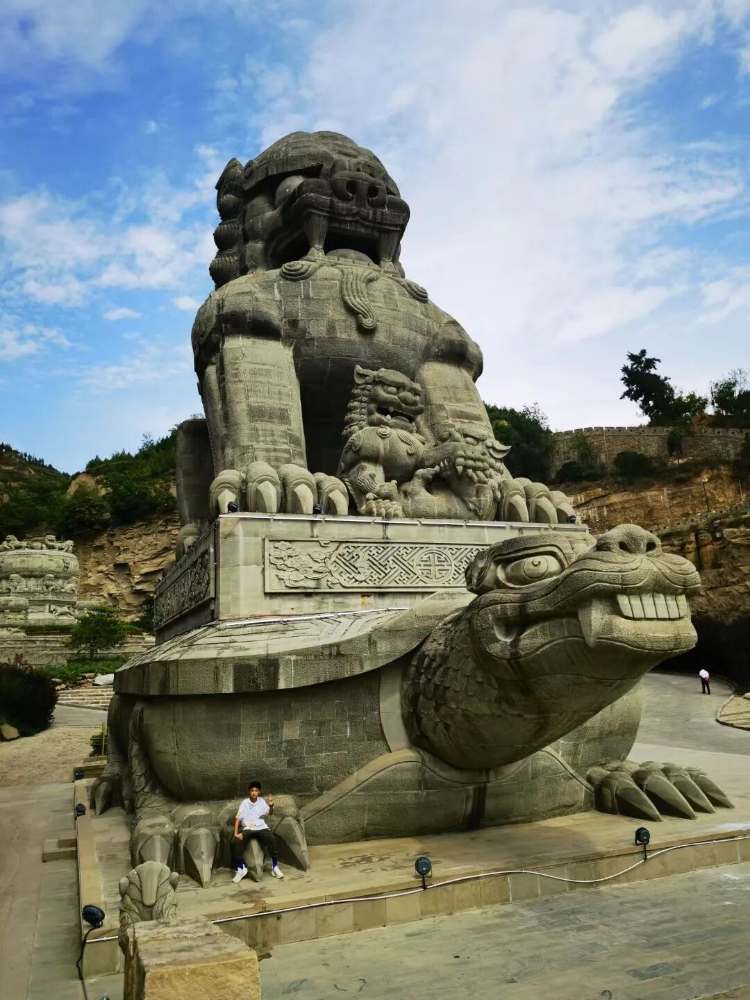
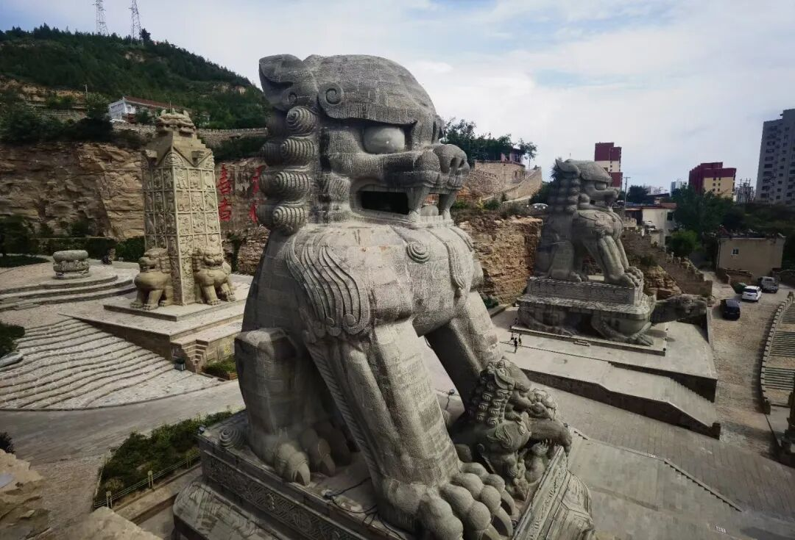
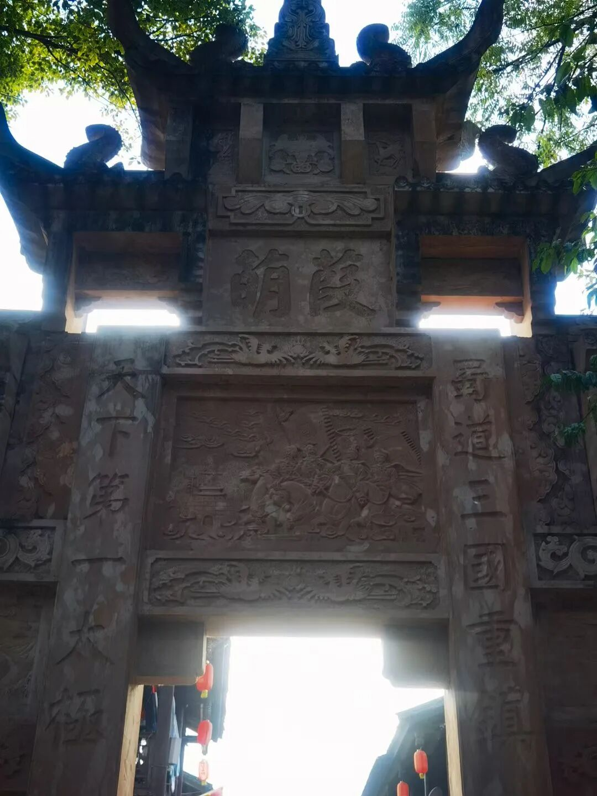
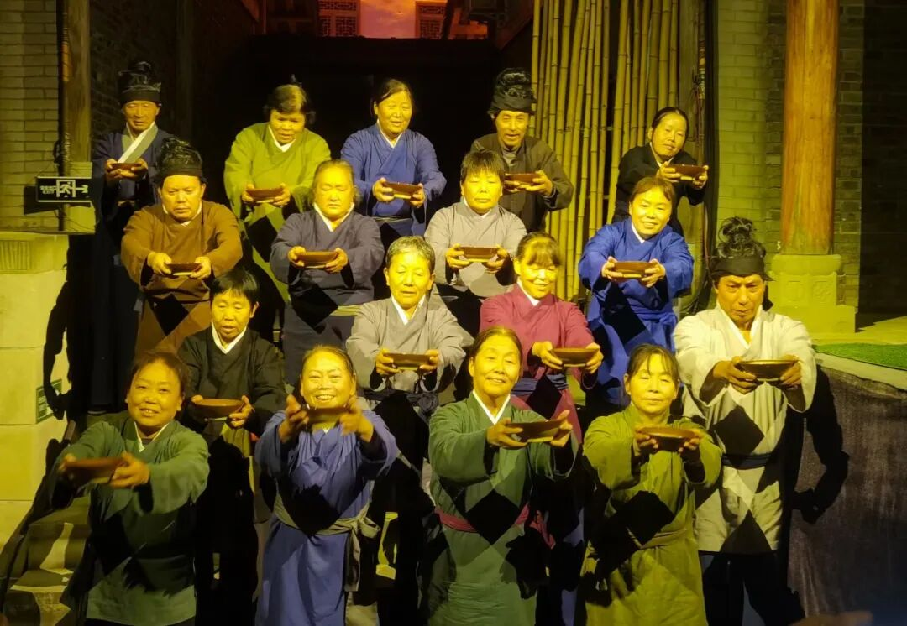
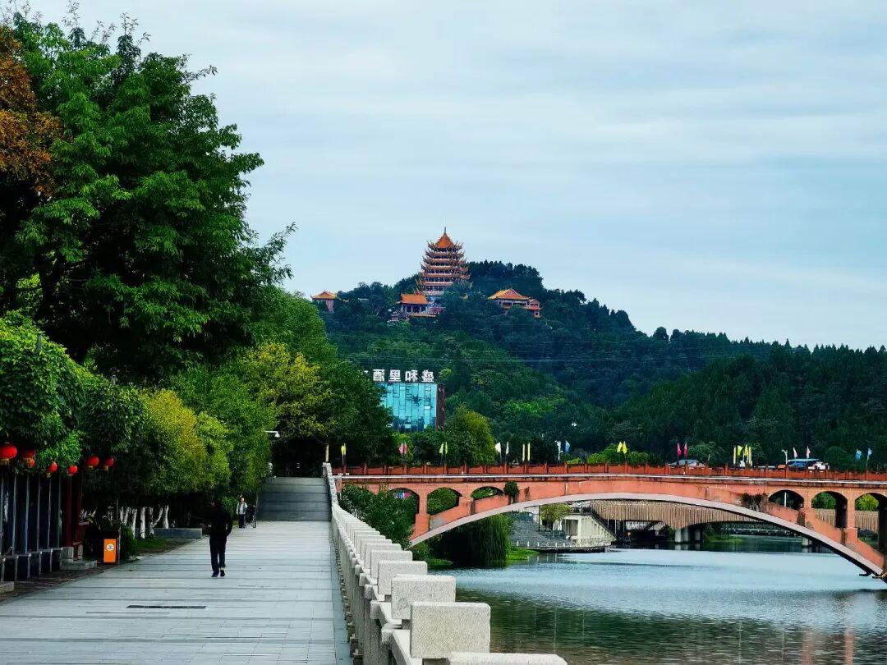
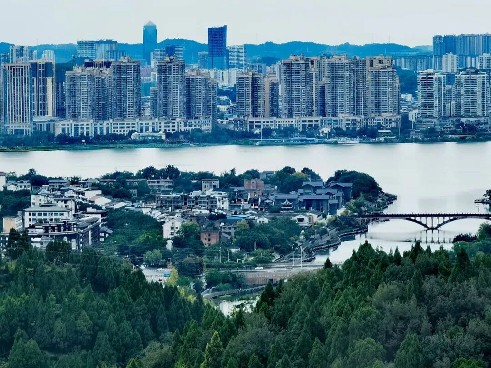
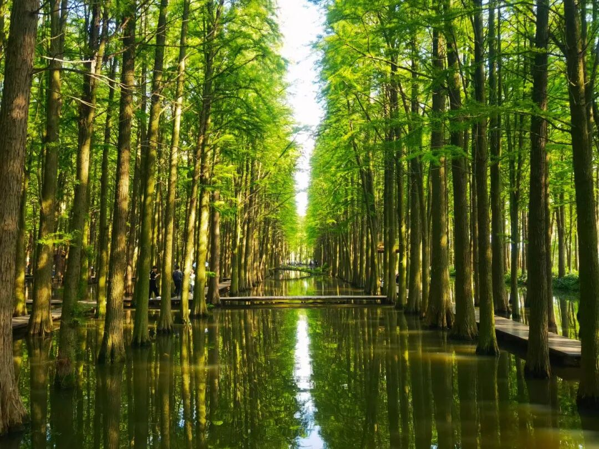
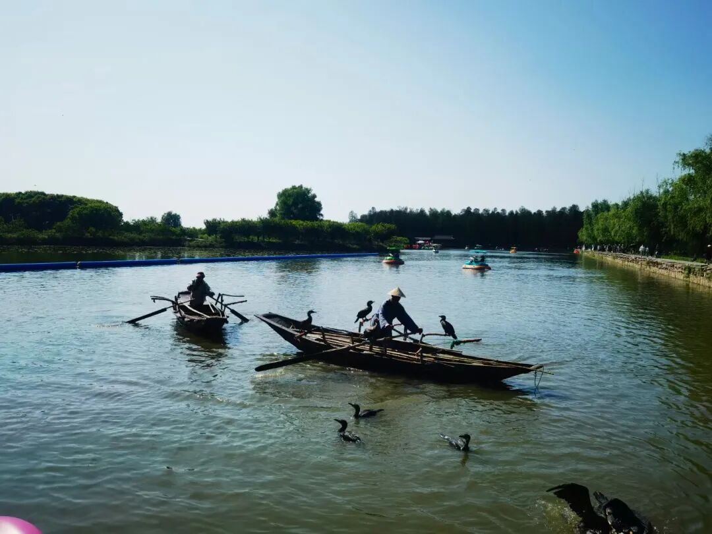

以往每年每个假期都没“浪费”，无论是3天小长假，7天黄金周，还是5天中长假，乃至寒暑期，全都安排了旅游。
今年清明、五一，都没怎么出门。突然觉得有点累了，就想单纯地休息，不想跑来跑去。
昨晚全家回忆去年暑期去了哪里，竟然集体失忆，连万峰林的样子都记不起来了。
国内的旅游资源还是很丰富的，作者是闲不住的人，这些年旅游加出差，走过的地方非常多，而且早就下沉了。
为配合五一假期，今天回忆一下曾经去过的一些有意思的、假期人不多的小地方，大的景点就不提了。
1、河南洛阳回洛仓博物馆


这是洛阳一个人气不算旺但很有意思的小博物馆，即便五一国庆也没多少人。回洛仓和含嘉仓是隋唐时期存粮的地方，当年的粮食，就是储存在这种半地下的仓窖中，一个仓窖可以存粮55万斤，回洛仓有这样的仓窖700余座，总储量大约3.85亿斤。看看老祖宗们在隋唐时期如何保障百万人大都市吃饭问题，还是很有意思的。
2、陕西榆林绥德石狮博物馆


这地方来过的人就非常少了，是自驾经过绥德时突然发现的，简直是巨物爱好者乐园。绥德在秦汉时期就是“石雕之乡”，到今天，国内大量的石雕还都产自那里。这个石狮博物馆就在公路旁，连门都没有。其中有一个保持吉尼斯世界记录的全球最大石狮雕刻（应该没考虑狮身人面像）。
3、四川广元昭化古城


古城越来越多，但有特色的不多。昭化就是三国时期著名的葭萌，西周已经建城了。刘备取成都之前，就驻扎在葭萌关。葭萌旁边就是金牛蜀道，街巷地面都是古迹。古城内的《葭萌春秋》演出很值得一看，最突出的特点，演员都是当地的村民。故事编排、演员演技，都很出彩，完全不输王潮歌的那些大戏。这种历史旅游与当地就业高度捆绑的案例，值得很多地方学习。
4、四川遂宁观音文化


遂宁不是一个旅游城市，所以假期去都是人不多的状态，但城建环境非常好。城东的灵泉寺和城西的广德寺都是千年古刹，始建于隋唐。广德寺受过唐宋明三朝敕封，有颜真卿的题字。灵泉寺的观音阁中有一尊超大型室内观音，值得巨物爱好者去打卡。
5、江苏兴化李中水上森林公园


兴化是江苏泰州下辖的县级市，泰州本身也不是旅游城市，长三角游客专门去泰州玩的也不多，但这个李中水上森林公园确实很有特色。假期人也有，多是当地周边游客，比起那些人踩人的大景点，人还是少多了。除了美景，还可以看到渔夫用鹈鹕捕鱼的场景，很有意思。
比起那些人满为患的大景点，前几年去的这几个小众目的地（甚至只是经过）给作者印象很深。还是人不太多的地方旅游感受更好。
很多城市只宣传自己那几个大景点，平时人不多，一到节假日就人满为患，旅游潮汐效应明显。但其实，大多数游客可能一次会经过好几个地方，如果能把这些目的地按不同路线重新“组合打包”，提前根据交通和住宿预订情况给出人流量预测建议，不但可以更好地分流人群，让游客的感受更好，还可以让更多的旅游资源被关注到。
中国数千年的文明史与今日的基建，足以支撑起全球最庞大的旅游产业，这个产业对就业的拉动，可比那些用工越来越少的高科技有用多了。
靠小红书、抖音去拉动打卡，是一个有效的路径。但迟早，人满为患的旅游疲劳感会席卷很多人。
不玩亏了，去玩更累。
这需要更多、更合理的假期分配方式。
比起寒暑假很多地区因气候不适合出行，春秋假是一个很好的尝试。如果早点把普高普及了，周末游也可以增加。
小学家长就不要卷了，周末人少还是多出去玩吧，寓教于乐。现在不玩，天天题海战术，以后也是被AI替代的命。不如小时候多去看看大好河山，给自己增加点兴趣，好歹多一些美好的记忆和话题。要知道，现在景区很多NPC的收入可比985硕士们要高。一个探店博主都能年入千百万，奋斗三十年的博士们何德何能。
问题不在学历，而在对需求的理解。
日本在老龄化加剧之后，叠加中国大陆制造业的崛起，也出现了本土很多行业的衰退，最终把旅游产业定为国策。中国大陆的制造业体量虽非当年日本可比，但无人化和出海外包的再全球化趋势已是必然。
一边是感叹年轻人不生了，一边是年轻人没有足够的工作机会。
到底谁是鸡，谁是蛋呢？
坐拥如此基建红利和庞大国内人口，旅游产业在今天可能只能称为起步。
多出门，多见识，就能多思考，现实中很多东西是书本上读不到的。需求源于现实，解决旅游疲劳，也是一个需求。
以上。
行万里路，欢迎加入作者的知识星球！